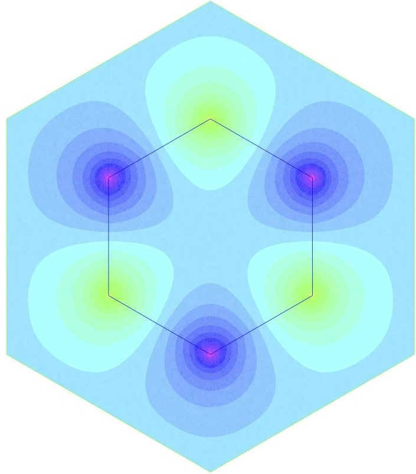
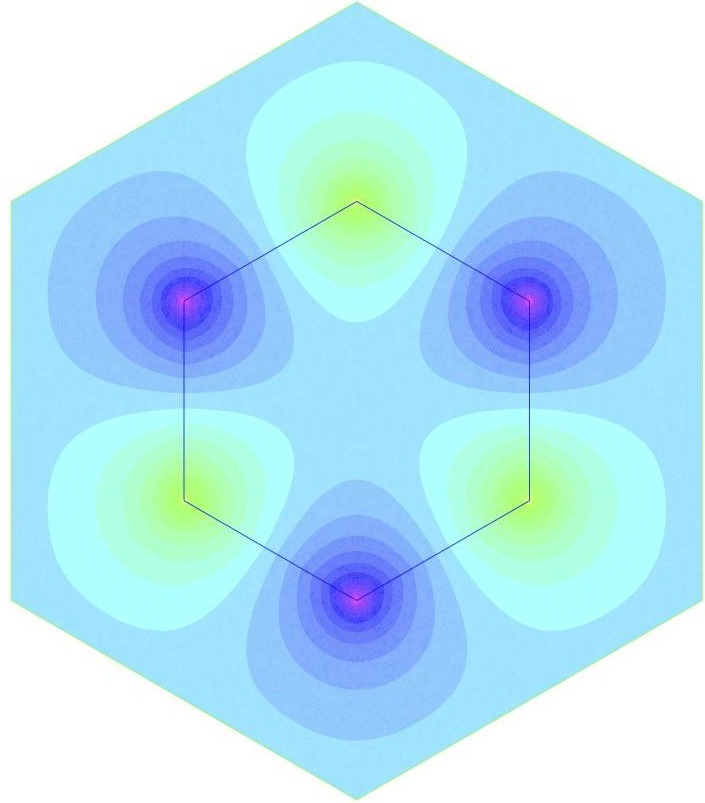

Carvalho Camille
Presentation
I'm a visiting assistant professor in the Applied Math Unit at the University of California Merced.
I'm interested in developing new efficient numerical methods for interface problems, specially in electromagnetics and in plasmonics. I work on wave propagation phenomena and related problems. I have been developing a finite-element based method to accurately capture the near-field in plasmonic structures, and I started to work on integral representation methods for close evaluation problems.
I did my PhD in applied mathematics under the direction of Anne-Sophie Bonnet BenDhia and Patrick Ciarlet, at team POems (ENSTA ParisTech, France), worked with Lucas Chesnel as a post-doc in team DEFI (CMAP, France), and currently collaborate with Arnold Kim and Shilpa Khatri at UC Merced.

 


Contact

carvalho0camille AT gmail.com
UC Merced, 5200 N Lake Rd, Merced CA 95343
Office hours: Thursday 3pm-5pm